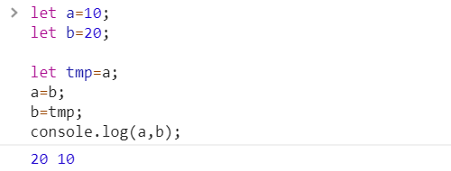
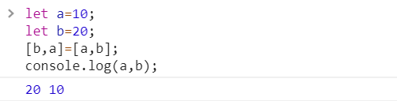
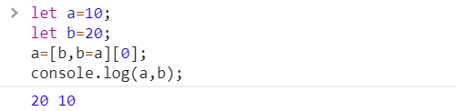
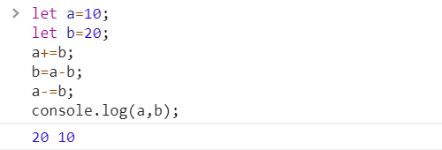
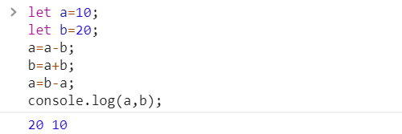

在平时的业务开发或者面试过程中，经常会遇到交换两个变量这种问题，于是，个人总结以下几种交换变量的方法：
1.方案一
使用一个临时变量来交换

2.方案二
使用ES6解构赋值语法来交换

3.方案三
利用数组

根据运算符的优先级，首先执行b=a,将a的值赋值给b，然后通过数组索引将b赋值给a,一行代码解决两值的交换。
4.方案四
先让a变成a与b的“和”（或a与b的“差”），然后用“和”减去b得到a的变量值赋值给b，再通过‘和’减去a的值得到b的值赋值给a;

两值的“差”代码如下：

关于两个数值交换总结的方法就这么多了，各位如果有更好更简洁的方法，欢迎补充。